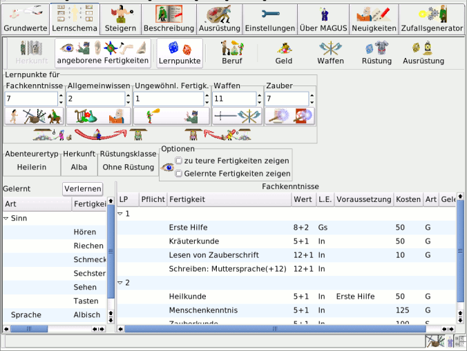
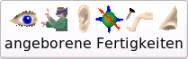
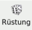
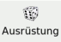
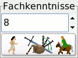
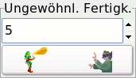
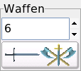
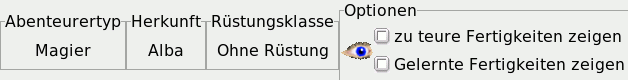
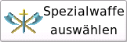

Bedienung - Lernschema
|
|
|
| Zum Seitenanfang |
Notebookseite Lernschema

|
| Zum Seitenanfang |
Buttonleiste

MAGuS-Style |
Für die Buttons der Buttonleiste der Notebookseite Lernschema existieren sowohl eine MAGUS-Style, als auch eine WindowsXP nachempfundene Version. |

Win32-Style
|
 |
Herkunft:
Wird dieser Button betätigt, öffnet sich das Auswahlfenster der Herkunftsländer. Nach der Auswahl wird die dem gewählten
Land entsprechende Muttersprache zur Auswahl vorgeschlagen (Mit "Einschränkungen aufheben" wird eine Liste
aller Sprachen zugänglich). Im Anschluß an die Auswahl der Muttersprache wird festgelegt in welcher Region Überleben
als Unviersalfertigkeit beherrscht wird. Der zugehörige Regionalquellenband wird automatisch aktiviert
|
|
|  |
Angeborene Fertigkeiten:
Es wird ausgewürfelt, welche angeborenen Fähigkeiten der Abenteurer besitzt. Um eine angeborene Fertigkeit einzugeben, muß das
Icon für die Eingabe von Werten in der Statuszeile aktiviert werden. Mittels "Lernpunkte" wird das Auswahlfenster wieder verlassen.
|
 |
| |
Lernpunkte:
Mit diesem Button werden die Lernpunkte ausgewürfelt. Im Anschluß daran werden die Fertigkeiten gelernt.
Alternativ zum Würfeln der Lernpunkte können diese von Hand eingegeben werden, wenn das Icon für
die Eingabe von Werten in der Statuszeile aktiviert ist. In diesem Fall kann mit der rechten Maustaste auch die
Eingabe für den W%-Wurf auf den Beruf eingegeben werden.
|
 |
 |
Beruf:
Durch einen Klick auf diesen Button, wird der W%-Wurf für den Beruf ausgeführt. Abhänging vom Wurf werden die in Frage
kommenden Berufe und die mit ihnen assozierten Fertigkeiten im Auswahlfenster angezeigt. Die Auswahl erfolgt über die
Auswahl einer der angezeigten Fertigkeiten.
Um einen Beruf direkt einzugeben, muß das Icon für
die Eingabe von Werten in der Statuszeile aktiviert sein. Bei der Eingabe wird jedoch keine eine entsprechende
Fertigkeit gutgeschrieben.
|
|
| |
Geld:
Mit diesem Button wird der Geldbetrag ausgewürfelt, welchen der Abenteurer
zu Spielbeginn besitzt.
Wenn das Icon für die Eingabe von Werten in der Statuszeile aktiviert ist,
so kann der Geldbetrag direkt eingegeben werden.
|
|
 |
Waffen:
Der Wert für Waffen wird ausgewürfelt, die möglichen Waffen werden im Auswahlfenster ausgewählt.
Mit aktiviertem Icon für die Eingabe von Werten in der Statuszeile kann der W%-Wurf für Waffen direk eingegeben werden |
 |
| |
Rüstung:
Die Rüstung, welche der Abenteurer zu Spielbeginn besitzt, wird ausgewürfelt.
Der Würfelwurf kann bei aktiviertem Icon für die Eingabe von Werten in der Statuszeile
auch direkt eingegeben werden.
|
 |
| |
Ausrüstung:
Zum Ausüben einiger Fertigkeiten wird eine spezielle Ausrüstung benötigt, Ob die Figur diese Ausrüstung besitzt
wird an dieser Stelle ausgedwürfelt. |
 |
|
| Zum Seitenanfang |
Lernpunkteverwaltung
Mittels "Lernpunkte würfeln" werden für die jeweiligen Fertigkeitsbereiche Lernpunkte ausgewürfelt. Alternativ
können Lernpunkte in für die jeweiligen Fertigkeitsbereiche direkt eingegeben oder modifiziert werden, nachdem
"Lernpunkte editieren" aktiviert worden ist.
|  |
Fachkenntnisse:
In diesem Feld werden die ausgewürfelten bzw aktuellen Lernpunkte für "Fachkenntnisse" angezeigt. Durch das
Aktivieren des Buttons können im Auswahlfenster abhängig von den gegeben Voraussetzungen und den erwürfelten
Lernpunkten Fachkenntnisse erworben werden.
|
 |
Allgemeine Fertigkeiten:
Die Lernpunkte für die "Allgemeinen Fertigkeiten" werden angezeigt. Durch aktivieren des Buttons können Allgemeine
Fertigkeiten gelernt werden.
|
|  |
Ungewöhnliche Fertigkeiten:
Wird dieser Button aktiviert, können "Ungewöhnliche Fertigkeiten" in dem Umfang erlernt werden, wie
angezeigt werden.
|
|  |
Waffenfertigkeiten:
Waffenfertigkeiten können im Umfang der angezeigten Lernpunkte erlernt werden, sobald dieser Button aktiviert wurde.
|
 |
Zauber:
Magisch begabte Figuren können im Rahmen ihrer Lernpunkte Zauber erlernen. Magier legen zudem im Auswahlmenü (nur bei diesen
sichtbar) ihr Spezialgebiet fest.
|
 |
Lernpunkte transferieren:
mit diesen zwei Buttons können Lernpunket von "Allgemeinwissen", bzw, "Waffenfertigkeiten"
zu "ungewöhnlichen Fertigkeiten" transferiert werden
|
|
| Zum Seitenanfang |
Infozeile

|  |
Spezialwaffe:
Dieser Button ist nur sichtbar, wenn der Abenteurertyp ein Kämpfer ist und eine Waffe als Spezialwaffe
lernen kann. Wenn der Button aktiviert ist, wird die Gewünschte Waffe ausgewählt.
|
|
Optionen:
Zu teure Fertigkeiten zeigen: Im Auswahlfenster werden auch Fertigkeiten angezeigt, für deren Erlernen nicht
genügend Lernpunkte vorhanden sind.
Gelernte Fertigkeiten zeigen:.Bereits gelernte Fertigkeiten werden im Auswahlfenster angezeigt.
|
|
| Zum Seitenanfang |
Auswahlfenster
Im Auswahlfensterbereich gibt es zwei Fenster. Im linken Fenster werden die bereits erworbenen Fertigkeiten angezeigt
(und sind ständig sichtbar. Das rechte Fenster beinhaltet das bzw. die eigentlichen Auswahlfenster. Eine Auswahl erfolgt,
indem die gewünschte Fertigkeit einmal(!) mit der linken Maustaste angeklickt wird.
|
| Zum Seitenanfang |
|